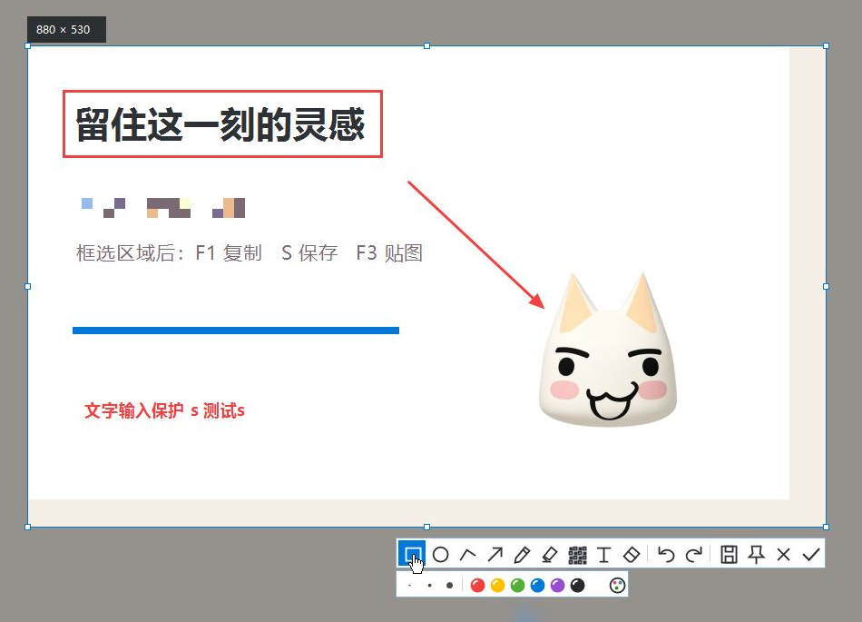

截一张，
贴在手边。
今天的小想法
留住这一刻
的灵感✳
的灵感✳
操作示意 · 点点看，了解一张截图的去处
三个键，刚刚好。
01
贴图
保存 PNG

一点标注，
就很清楚。
矩形 / 圆形直线 / 箭头画笔 / 荧光笔马赛克文字橡皮擦
留在旁边，
就不用来回找。
随手拖动滚动缩放调节透明度
截图的归处，
由你决定。
- 图片保存在本机
- 仅轮换最近 3 张
- 手动图片长期保留
我的截图
手动保存的图片.png长期保留
缓存 仅保留最近 3 张
✳截图 01
↗截图 02
♡截图 03
手动保存的图片一直保留，缓存自动轮换。
把夹心贴，放在手边。
Windows
Windows 10 / 11 · x64
macOS
macOS 14+ · Apple Silicon + Intel
你可能想知道。
Mac 按 F1 为什么会调亮度？＋
Mac 可能把 F 键优先用作亮度、音量等系统功能。配合 Fn 使用 F1、F3 即可，或在 macOS 键盘设置中改为标准功能键。也可以在夹心贴设置里换一个顺手的组合。
截图会上传到哪里？＋
桌面应用没有联网、遥测和上传逻辑。图片写入你选择的本地文件夹，复制操作写入系统剪贴板。官网只用于介绍和下载安装包，不会读取你的桌面或截图。
自动清理缓存，会删掉我保存的图片吗？＋
不会。只有“缓存”子目录里由夹心贴按规则命名的自动缓存会轮换，最多保留最近三张。手动保存的图片、无关文件和旧保存目录中的内容保留。
为什么 Mac 第一次截图需要授权？＋
macOS 要求截图应用获得屏幕录制权限。在系统设置的“隐私与安全性”中允许夹心贴，按系统提示重新打开即可。全局快捷键和标注不需要辅助功能权限。
支持 OCR、滚动长截图或者跨屏框选吗？＋
v1.0 专注区域截图、基础标注与桌面贴图，尚未实现 OCR、滚动长截图和自动窗口识别。Mac 可以在任一显示器截图，单次选区限定在一块显示器内。HDR 与受保护内容不在完整验证范围内。